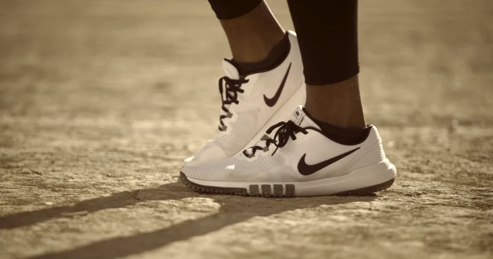
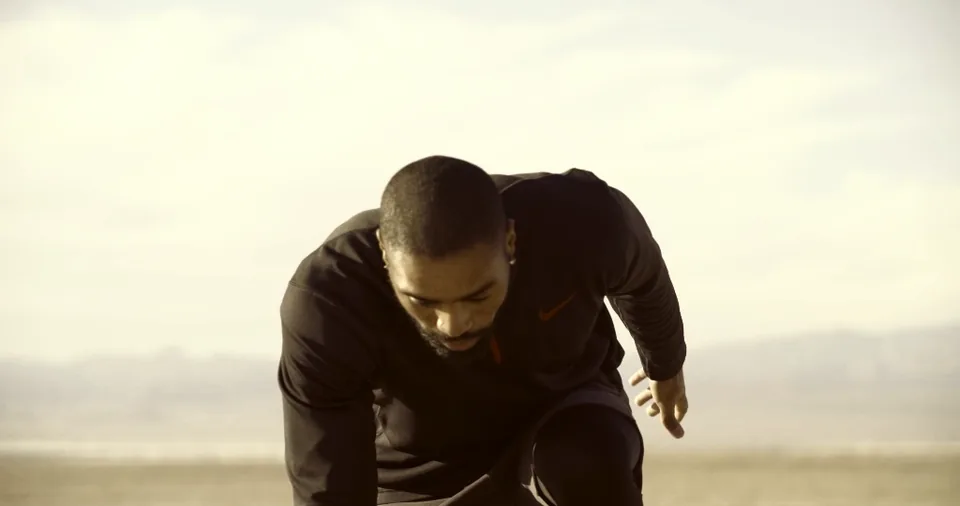
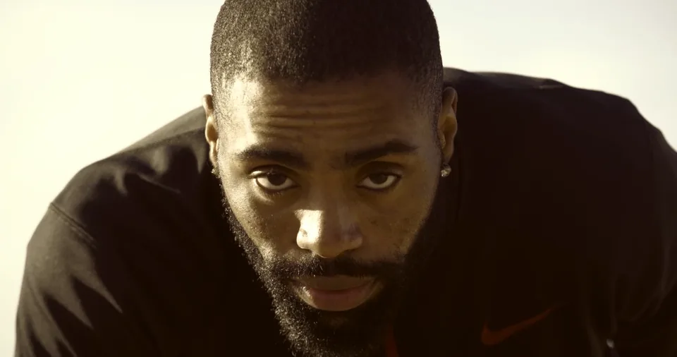

06 / 07
Nike, spec ad
Anuncio para una campaña de Nike.
- Año
- 2022
- Contexto
- Curso Shut Up and Cut, de Joey DeBlanco
- Rol
- Edición, diseño de sonido y gráfica
Un desierto al amanecer y un atleta que tiene un largo camino por delante. El guion y el material de rodaje vienen del curso; el trabajo es el corte, el ritmo, el diseño de sonido y la gráfica final. Es una pieza de práctica, sin relación con la marca.


